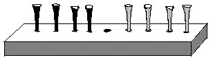
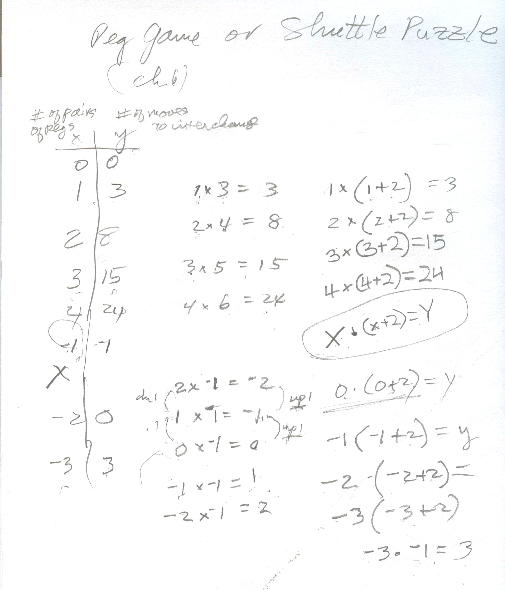
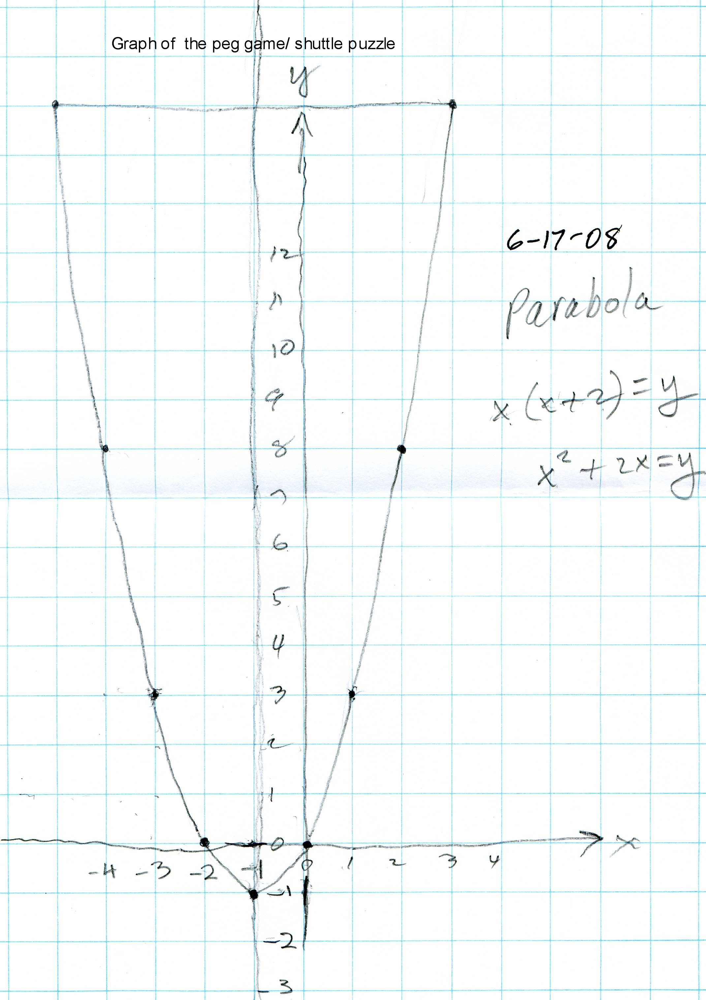
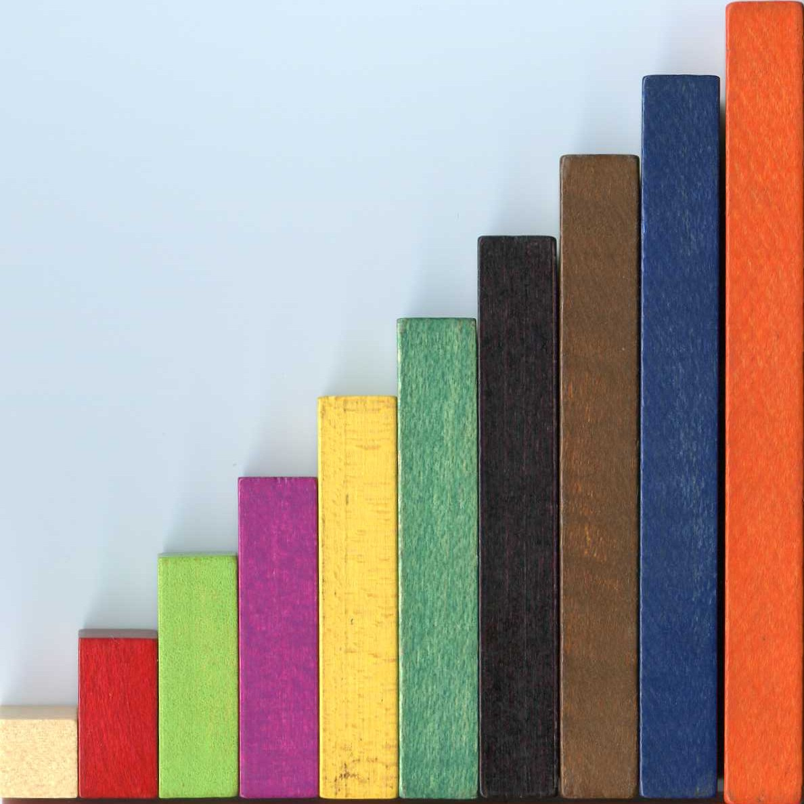
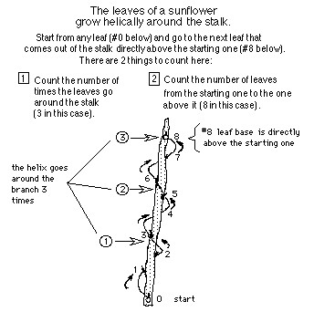
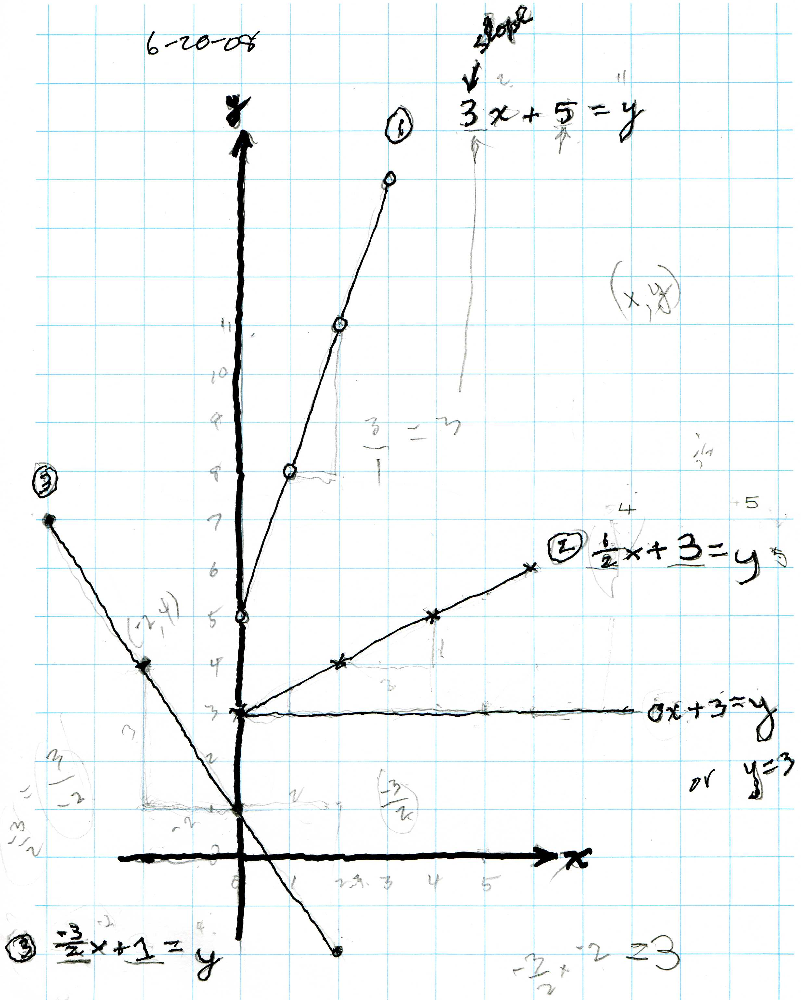

<html>

<head>
<meta http-equiv="Content-Type" content="text/html; charset=windows-1252">
<meta name="GENERATOR" content="Microsoft FrontPage 4.0">
<meta name="ProgId" content="FrontPage.Editor.Document">
<title>Nanako comes from Japan to work with Don</title>
</head>

<body>
<p align="center"><b><font size="5">
Nanako came a second summer from Japan, June 16-21, 2008 to work with Don!</font></b><p align="left"><b><font color="#FF00FF"><font size="5">The
following is Nanako's work with Don, as they did it, then scanned and remembered
by Don. Please have patience, there are many pictures to download!</font></font></b><p align="left"><font color="#000000" size="5"><b>Monday June
16, 2008</b></font><p align="left"><b><font size="3" color="#008000">After
greeting Nanako and her Mum outside, they all went down to the mathroom. Don had
copies of Nanako's math curriculum downloaded from her school website, Nanako's
work from last summer and her notebooks from her 4th grade work at her school.
Don decided to see what Nanako could do with fractions, decimals and percents;
he made the chart below in her notebook that she had used last summer. He wrote
in 1/2 in the first row, .47 in the second row and 33 1/3 % in the third row.
Nanako's job was to fill in the equivalent names in that row.&nbsp;She did fine
on the first 2 rows, 1/2 = 0.5 = 50% and .47 = 47/100 = 47%. Then Nanako had a difficult time with 33 1/3 %.</font><font size="3" color="#FF0000">
&nbsp;</font></b>
<p align="center"></p>
<p align="left"><b><font size="3" color="#008000">They talked about her answer
of 33.333 as a decimal and 3333/100 as a fraction and ended up with .333... =
.33 1/3 as a decimal and 33.333.../100 = 33 1/3 / 100 then tried to simplify
this. In the next to the last line above, she made equivalent fractions for 33
1/3 / 100 (thirty three and one third hundredths) as 50ths, 200ths, then Don
suggested multiplying top and bottom by 3 and she ended up with 100/300 = 50/150
= 25/75 = 1/3. Don showed Nanako she could use 100/300 and divide top and bottom
by 100 to get 1/3 directly. In the process she took half of 33 1/3 to get 16 1/2
+ 1/2 of 1/3 = 16 2/3 using the picture above. So Nanako did 1/2</font><font color="#008000" size="4"><sub>*</sub></font><font size="3" color="#008000">1/3
= 1/6 and 1/2 + 1/6 = 2/3, which was good stuff!&nbsp;</font></b></p>
<p align="left"><b><font size="3" color="#008000">Don asked Nanako if she bought
a shirt for 6000 Yen and received a 33 1/3% discount, how much would she pay for
it? The discount would be 1/3*6000= 2000, then she would pay 6000-2000 = </font><font size="3" color="#800080">4000
Yen (100Yen=~$1)</font><font size="3" color="#008000">. Another way to look at that was, if
the discount was 1/3, then she would pay 2/3 of the regular price or 2/3*6000 = </font><font size="3" color="#800080">4000
Yen</font><font size="3" color="#008000">.</font></b></p>
<p align="left"><b><font size="3" color="#008000">Then Don tried to get Nanako to
do some percents in her head. Like take 10% of 200. 10%=1/10, so divide 200 by
10 = 20. Then 5% of 200 is 1/2 of 10% of 200 = 10 and 15% of 200 is (10%+5%) of
200 = 20 +10 = 30. They talked about 10% of&nbsp; 
= 20 which is 1/10 * &nbsp;
= 20 , multiplying both sides by 10, you get &nbsp;
= 200. At one point, after Don wrote that 1/10 = 10%, Nanako wrote that 1/5 = 5%
and 1/15=15% and 1/20 = 20%. But with a couple of questions from Don, </font><font color="#0000FF" size="4">she</font><font size="3" color="#008000">
figured these out to get the correct answers.</font></b></p>
<p align="center"></p>
<p align="left"><b><font color="#008000">To keep Mum from getting nervous about
Nanako's mistakes, </font><font color="#000000"> Don asked her to solve the equation&nbsp; 2x + 5 = x -
7</font><font color="#008000">,
that is, find a number that would make this sentence true. Mum proceeded to do
the normal thing, subtracting 5 from both sides (except she thought of
&quot;moving things to the other side&quot;)- see her arrows. She got to x = x/2 - 6.
Then Don realized that Mum had the correct answer x = <font size="4"><sup>-</sup></font><sup>
</sup>12.</font></b></p>
<p align="center"></p>
<p align="left"><b><font color="#008000">At this point Don decided to show Mum
how to iterate x/2 - 6. Don asked her to try a number in for x; she chose <font size="4"><sup>-</sup>
</font>4 above.&nbsp; She did the arithmetic, <font size="4"><sup>-</sup> </font>4/2 -
6 = <font size="4"><sup>-</sup> </font>8. She then put <font size="4"><sup>-</sup>
</font>8 in for x; she did the arithmetic, <font size="4"><sup>-</sup> </font>8/2
- 6 = <font size="4"><sup>-</sup> </font>10.&nbsp;&nbsp;&nbsp; See her answers
above to the right, forming a sequence <font size="4"><sup>-</sup> </font>4, <font size="4"><sup>-</sup>
</font>8,&nbsp; <font size="4"><sup>-</sup> </font>10, <font size="4"><sup>-</sup>
</font>11, <font size="4"><sup>-</sup> </font>11.5, <font size="4"><sup>-</sup> </font>11.75,&nbsp;
<font size="4"><sup>-</sup> </font>11.875, ... which approaches <font size="4"><sup>-</sup>
</font>12 as the limit! And Mum saw a pattern in the differences, (that Don
never saw before-great!) : <font size="4"><sup>-</sup>
</font>4, <font size="4"><sup>-</sup> </font>2, <font size="4"><sup>-</sup> </font>1,
<font size="4"><sup>-</sup> </font>1/2, <font size="4"><sup>-</sup> </font>1/4, <font size="4"><sup>-</sup>
</font>1/8, which is another sequence, this time approaching 0 as a limit!</font></b></p>
<p align="left"><b><font color="#008000">Then Mum tried 5 to put in for x and Don
suggested she use a calculator to do the arithmetic. This sequences of x's also
approaches <font size="4"><sup>-</sup> </font>12 as the limit!&nbsp;</font></b></p>
<p align="center"></p>
<p align="center"></p>
<p align="left"><b><font color="#008000" size="4">So, in solving a simple linear
equation as Mum did, one can iterate a function X/2 - 6, and get an infinite
sequence which approaches a limit (<sup>-</sup>12 in this case), which is the answer to the problem!!! Very exciting!</font></b></p>
<p align="left"><font color="#008000" size="4"><b>Mum also worked on quadratic
equations like x<sup>2</sup> - 5x + 6 = 0 answers {2,3} and proceeded to find
the 2 secrets in solving these equations. She even found the answers to x<sup>2</sup>
- 25x + 24 = 0 and x<sup>2</sup>
- 6 1/2x + 9 = 0 and made up three quadratic
equations for Don to figure out.&nbsp; [The math genes
certainly run in the family!!]</b></font></p>
<hr><b><font size="4">Tuesday June 17, 2008</font></b>
<p align="center"><b><font size="4" color="#800080">Gauss' method for adding the
counting numbers from 1 to 100, and how Nanako expands this problem. </font></b></p>
<p align="left"><b><font size="4" color="#008000">The story goes like this: When
Gauss was in first grade, his teacher, in trying to give him a hard problem to
keep him busy, asked him to add the numbers from 1 to 100.</font></b></p>
<p align="center"></p>
<p align="left"><b><font color="#008000" size="4">When Don asked Nanako to make
up a sum using her rule&nbsp;</font></b></p>
<p align="center"><b><font color="#008000" size="4">S= n(F+L)/2</font></b></p>
<p align="left"><b><font color="#008000" size="4">she made up 2+4+6&nbsp; (even
numbers!), S=3(2+6)/2 = 12 which was correct. At this point Mum and Don made up
some numers to add and used negative numbers (below). And her rule worked. It
didn't work if the differences were not the same!</font></b></p>
<p align="center"></p>
<p align="center">&nbsp;</p>
<p align="center"><b><font color="#008000" size="4">Nanako played the Peg game
(see chapter 6)</font></b></p>
<p align="center"></p>
<p align="left"><b>The object of this puzzle is to interchange the blue and the
red pegs. The rules are 1) you can move to a hole that's next to a peg; 2) you
can jump, but only one peg and it must be of the other color, and 3) you can't
move backwards. You must start with the empty space in the middle and end that
way. You can use golf tees, as I do, or you can use two different kinds of coins
or bottle caps or pieces of colored paper as the pieces.</b></p>
<p align="left"><b><font color="#008000" size="4">It takes time for people to
figure out the pattern of how the pieces move, without having to start over. She
was able to do this fairly quickly. Then Don made a table below, where x was the
number of pairs of pegs, and y was the number of moves to interchange the pegs.
She started with one pair, and it took 3 moves, starting with 2 pairs, took 8
moves</font></b></p>
<p align="center"></p>
<p align="left"><b><font color="#008000" size="4">Nanako saw the pattern 1x3=3,
2x4=8, 3x5=15.. could be written as 1(1+2)=3 and 2(2+2)=8 and 3(3+2)=15..</font></b>
<br><b><font color="#008000" size="4">Nanako found the rule x<sub>*</sub>(x+2)=y
with some help from Don. In the
process Don made sure she could multiply negative and positive numbers (see
above at the bottom of the page in the center). She then graphed this function
to get a parabola.</font></b></p>
<p align="center"></p>
<p align="left"><b><font color="#008000" size="4">They talked about the graph
having symmetry and the axis of symmetry was x = <sup>-</sup>1.</font></b></p>
<p><font color="#008000" size="4"><b>Don had Nanako get the area of triangles
with the same base and height. She found the area in each case was 3.</b></font></p>
<p align="center"></p>
<p align="left">&nbsp;</p>
<hr><b><font size="5">Wednesday, June18, 2008</font></b>
<p align="left"><b><font color="#008000" size="4">This work is from chapter 6 of
Don's worksheet book. </font></b></p>
<p align="left"><b><font color="#008000" size="4">Don talked to Nanako about
comparing things 1.) </font><font size="4" color="#FF00FF">by subtraction</font><font color="#008000" size="4">,
like if Don is 79 years old and Nanako is 9 years old, how much older is Don
than Nanako? Don is 79-9 = 70 years older than Nanako. and 2.) </font><font size="4" color="#FF00FF">by
ratio or division</font><font size="4" color="#008000">, like how many times as
old is Don than Nanako? Don is 79/9 = about 9 times as old as Nanako.</font></b></p>
<p align="center"></p>
<p align="left"><b><font color="#008000" size="4">They used the 10 different length
Cuisenaire rods above, from the 1x1x1 white rod (1 cubic cm.) to the 1x1x10 orange rod
(10 cubic cm.). Don had Nanako find the surface area of each rod (in square
cm.), the volume of each rod (in cubic cm.), then find the SA to Vol ratio (SA/Vol)
for each rod.</font></b></p>
<p align="center"></p>
<p align="left"><b><font color="#008000" size="4">Don asked Nanako to find a
pattern to find the surface area from the length of the rod. She saw that the
first SA was 6 and 2*3=6, then 2*5=10 and 2*7=14..but neither Don nor Nanako saw
how the length was involved at that time. She also saw that the SA went up 4
each time and that the SA was 4 times the Length (the lateral area for each
rod), + 2, for the 2 ends of every rod, so the SA was 4</font><font color="#008000" size="3"><sup>x</sup></font><font color="#008000" size="4">1
+ 2= 6,&nbsp; 4</font><font color="#008000" size="3"><sup>x</sup></font><font color="#008000" size="4">2
+ 2 = 10, and 4</font><font color="#008000" size="3"><sup>x</sup></font><font color="#008000" size="4">3
+ 2 = 14 and she generalized to SA = 4</font><font color="#008000" size="3"><sup>x</sup></font><font color="#008000" size="4">L
+ 2. The Volume was simple, it was always equal to the same number of </font><font size="4" color="#FF00FF">cubic
cm</font><font color="#008000" size="4">. as the # of Length units.</font></b></p>
<p align="left"><b><font color="#008000" size="4">In the process of getting the
SA/Vol ratios Don and Nanako talked about the division, of like 14/3, which she
wrote as 14R2. Don talked with her about sharing 14 cookies between 3 people-
each person would get 3, with 2 cookies left over. With a picture above on the
right, of the 2
left over cookie she realized each person would get 4 and 2/3 or 4 2/3
cookies.&nbsp;</font></b></p>
<p align="left"><b><font color="#008000" size="4">[Don made sure Nanako
understood that if 14/3 = 4 2/3, then what was 3</font><font color="#008000" size="3"><sup>x</sup></font><font color="#008000" size="4">
4 2/3? on her paper above near the bottom, you can see how Don did this by
adding 4 2/3 three times. and they got into 3</font><font color="#008000" size="3"><sup>x</sup></font><font color="#008000" size="4">2/3</font><font color="#008000" size="3">=
</font><font color="#008000" size="4">2, and 3</font><font color="#008000" size="3"><sup>x</sup></font><font color="#008000" size="4">5/3
= 5 and n</font><font color="#008000" size="3"><sup>* </sup></font><font color="#008000" size="4">Y/n
= Y she wrote. Also Nanako (in the lower left corner above) did 3</font><font color="#008000" size="3"><sup>x</sup></font><font color="#008000" size="4">5/3
= 5 an entirely different and wonderful way. </font><font color="#008000"><font size="4">
For each of the 5/3 she put 1 (= 3/3), then thought (5-3)/3 = 2/3, so she
thought of 5/3 as 1+2/3, added the 3 1's and 3 of the 2/3 to get 3 + 6/3= 3+2=5,
the answer to 3x 5/3.&nbsp; </font></font></b></p>
<p align="left"><b><font color="#008000" size="4">So for the length L of the
rod, the SA/Vol ratio is (4</font><font color="#008000" size="3"><sup>x</sup></font><font color="#008000" size="4">L
+ 2)/L and dividing by L, this could be written as SA/Vol = 4 + 2/L. So they had
an infinite sequence of ratios (L could get bigger and bigger). Don asked Nanako,
what happens to 2/L as L gets bigger and bigger. The discussion went like this:</font></b></p>
<p align="center"></p>
<p align="left"><b><font color="#800000" size="4">Why was Don doing this with
Nanako?&nbsp;Besides the fact that 1.) they got an infinite sequence which approaches
a limit, 2.) she found the surface area of a rectangular solid, 3.) she had to
divide to get a mixed number, 4.) she multiplied a whole number by a mixed
number, 5.) she looked for and found patterns,&nbsp;</font></b></p>
<p align="left"><b><font color="#008000" size="4">They talked about the fact that a small animal (the white rod) has the
largest SA/Vol ratio. Now what does the SA have to do with anything.., actually
the SA is a measure of the skin area. When the small animal is out in the sun,
it loses moisture too fast and can die.&nbsp;The picture below is from an old
Scientific American article. The word desiccation means to dry up.</font></b></p>
<p align="center"></p>
<p align="left"><b><font color="#008000" size="4">This shows that rodents, to
stay alive, become nocturnal animals!</font></b></p>
<p align="left"><b><font color="#008000" size="4">This idea also explains why we
use grated cheese on spaghetti instead of a big glob of cheese. The grated
cheese, with a much larger surface area, melts easier, and can get all around the spaghetti- mmmm
good!</font></b></p>
<hr>
<p align="left"><font size="5"><b>Thursday, June 19, 2008</b></font></p>
<p align="center"></p>
<p align="left"><font size="4" color="#008000"><b>Don helped Nanako get the Fibonacci
numbers from a pine cone from his front yard and a sunflower stalk.&nbsp;See
chapter 7.</b></font></p>
<p align="center"></p>
<p align="left"><b><font size="4" color="#008000">They got 3 and 8 from the
sunflower stalk and 5 and 8 from the pine cone; the Fibonacci numbers are 3,5,8
and from these Nanako got 1, 1, 2, 3, 5, 8, up to 144 below.</font></b></p>
<p align="left"><font size="4" color="#008000"><b> She then got the ratio of
consecutive Fibonacci numbers as mixed numbers and decimals.</b></font></p>
<p align="center"></p>
<p align="left"><b><font size="4" color="#008000">She was able to get 1 8/13 as
a decimal, then Don suggested she use a calculator to do the rest of the ratios.</font></b>
<b><font size="4" color="#008000">Nanako saw that she was
getting an alternating, infinite sequence to 4 decimal places on a TI 84 plus! She also
became aware that the 10th Fibonacci ratio 89/55 above showed up in the 11th,
but as 1 55/89 (1 + the reciprocal of 89/55).&nbsp;</font></b></p>
<p align="left"><font size="4" color="#008000"><b> Then she graphed this infinite,
alternating sequence. This
was hard because the numbers were very close to each other, so they used mm.
graph paper to help a little.</b></font></p>
<p align="center"></p>
<p align="left"><font color="#008000" size="4"><b>Don showed Nanako and Mum how <i>Mathematica
</i>can get 100 digits for The Golden Mean quickly:&nbsp;</b></font></p>
<p><font color="#008000" size="4"><b>N[(Sqrt[5]+1)/2,100] =</b></font></p>
<p><font color="#008000" size="4"><b>1.618033988749894848204586834365638117720309179805762862135\</b></font></p>
<p><font color="#008000" size="4"><b>448622705260462818902449707207204189391137...</b></font></p>
<hr>
<p align="left"><font size="5"><b>Friday, June 20, 2008</b></font></p>
<p align="left"><b><font color="#008000" size="4">Don asked Nanako to graph the
equation 2x + 3 = y. She found pairs of numbers for x and y that will make the
sentence true. She made a table to show these pairs of numbers, then plotted
these on the graph with dots </font><font color="#000000" size="7">.</font><font color="#008000" size="4">.&nbsp;</font></b></p>
<p align="center"></p>
<p align="left"><b><font color="#008000" size="4">She saw a pattern in the
y-numbers in the table- they go up </font><font size="4" color="#FF6600">2</font><font color="#008000" size="4">.
She saw that the points on the graph go 1 to the right and </font><font size="4" color="#FF6600">2</font><font color="#008000" size="4">
up and Don asked her if there was a </font><font size="4" color="#FF6600">2</font><font color="#008000" size="4">
in the equation, and sure enough it was
there </font><font size="4" color="#FF6600">2</font><font color="#008000" size="4">x
+ 3 = y, YES!!! They looked at the 3 in the equation and she saw the 3 on the
graph when x=0, where the line crosses the y-axis. Then she graphed the equation
5x+3 = y with </font><font color="#000000" size="5">×</font><font size="5" color="#008000">'s</font><font color="#008000" size="4">.
Don asked how the graph of this equation would be different; she predicted
correctly that the pattern would go 1 right and 5 up.</font></b></p>
<p align="left"><b><font color="#008000" size="4">Don then did the reverse, he
gave Nanako 3 graphs and had her write the equation for each graph below. They
talked about the slope of the line 3, in the first case below, 0 if the line is
horizontal, and negative, like <sup>-</sup>3/2 for graph #3, is the line goes up
to the left. And they also talked about the y-intercept, where the line crosses
the y-axis, when x=0 and is the adding number.</font></b></p>
<p align="center"></p>
<p align="left"><b><font size="4" color="#008000">They then worked on geometric transformations
with matrices (see Don's book <u>Changing Shapes With Matrices</u>, which Don
gave to Nanako):</font></b></p>
<p align="left"><b><font color="#008000" size="4">Don started Nanako with the
&quot;grocery-store&quot; arithmetic to multiply the matrices.
Nanako went to the grocery store on</font><font size="3"><font color="#008000"> </font><font color="#000000">M</font><font size="4" color="#008000">onday
to buy </font><font color="#FF00FF">3</font><font size="4" color="#008000">
boxes of </font><font color="#000000">B</font><font size="4" color="#008000">lueberries,
</font><font color="#FF00FF">2</font><font size="4" color="#008000"> boxes of </font><font color="#000000">S</font><font size="4" color="#008000">trawberries
and </font><font color="#FF00FF">4</font><font size="4" color="#008000">
packages of </font><font color="#000000">G</font><font size="4" color="#008000">rapes.
This is shown in the row matrix on the left. The </font><font color="#000000">Price
</font><font color="#008000">matrix shows the price of the </font><font color="#000000">B</font><font color="#008000">lueberries
is </font><font color="#000000">10</font><font color="#008000"> cents per box
(all prices are in cents to make the multiplication simple), the price of the </font><font color="#000000">S</font><font color="#008000">trawberries
</font><font color="#000000">50</font><font color="#008000"> cents per box, and
the price of the </font><font color="#000000">G</font><font size="4" color="#008000">rapes
60 cents per package.</font></font></b></p>
<p align="left"><b><font size="3"><font color="#008000">The question is how much
will Nanako spend on </font><font color="#000000">M</font><font size="4" color="#008000">onday?
And how does she find this? She said 3x10 + 2x50 + 4x60 = 370 cents. In other
words, one goes to the </font><font color="#FF0000">right</font><font size="4" color="#008000">
in the row matrix and </font><font color="#FF0000">down</font><font size="4" color="#008000">
in the column matrix, multiplying the number of each item by the price of the
item, then adding the products.</font></font></b></p>
<p align="center"></p>
<p align="left"><font color="#008000" size="4"><b>Then Don added Tuesday to the
row matrix, and Nanako found the total cost for Monday and Tuesday.</b></font></p>
<p align="left"><b><font color="#008000" size="4">Once Nanako could multiply the
matrices, Don made the </font><font size="4" color="#000000">black</font><font color="#008000" size="4">
&quot;dog&quot; on the graph paper below, showing its 9 points. He then had
Nanako choose 4 numbers from <sup>-</sup>1, 0 and 1 only, for her transformation
matrix (2 rows x 2 columns); she chose {0, 1&nbsp; and 1, <sup>-</sup>1}. The
her job now was to take each point on the dog, like point </font><font size="4" color="#000000">#1
at (1,1)</font><font color="#008000" size="4">, make this a matrix [</font><font size="4" color="#000000">
1 1</font><font color="#008000" size="4"> ] and multiply this matrix by her
transformation matrix (remember going right on the 1st matrix and down the first
column in the 2nd matrix; </font><font size="4" color="#000000">1</font><font color="#008000" size="4">x0
+ </font><font size="4" color="#000000">1</font><font color="#008000" size="4">x1
= </font><font size="4" color="#0000FF">1</font><font color="#008000" size="4">
; then going right in the first matrix and down the 2nd column in the 2nd matrix
</font><font size="4" color="#000000">1</font><font color="#008000" size="4">x1
+ </font><font size="4" color="#000000">1</font><font color="#008000" size="4">x
<sup>-</sup>1 = </font><font size="4" color="#0000FF">0</font><font color="#008000" size="4">
to get [ </font><font size="4" color="#0000FF">1 0</font><font color="#008000" size="4">
], the </font><font size="4" color="#0000FF">new</font><font color="#008000" size="4">
point </font><font size="4" color="#0000FF">#1 at (1,0)</font><font size="4" color="#008000">.
So each point on the </font><font size="4" color="#000000">old &quot;dog&quot;</font><font size="4" color="#008000">
goes to a </font><font size="4" color="#0000FF">new point</font><font size="4" color="#008000">
to get the transformed </font><font size="4" color="#0000FF">&quot;dog&quot;</font><font size="4" color="#008000">.
How was the old dog changed?</font></b></p>
<p align="center"></p>
<p align="left"><font color="#008000" size="4"><b>Try some transformation
matrices yourself using the java applet created by <a href="http://www.mathman.biz/html/dogtrans6/changing_shapes_with_matrices%20ies6.html">ies</a>
in Japan for Don's website, as done in his book <u>Changing Shapes With
Matrices.</u></b></font></p>
<hr>
<p align="left"><font size="5"><b>Saturday, June 21, 2008</b></font></p>
<p align="left"><b><font size="4" color="#008000">Nanako and Don painted in
watercolor (Nanako's ideas, after eating pancakes for breakfast!)</font></b></p>
<p align="center"></p>
<p align="center"><b><font size="5" color="#FF00FF">This was a sensational week
working with Nanako and her Mum!!! Thank you Dad for allowing Don to do this.</font></b></p>
<p align="center"><b><font size="5" color="#008000">Don made and sent the
following card to Nanako for her 10th birthday in July, 2008 as an attached
file:</font></b></p>
<p align="center"></p>
<p align="center"><b><font color="#008000">&nbsp;Don received this response from
Nanako :</font></b></p>
<blockquote>
  <blockquote>
    <p class="MsoNormal" align="left"><font color="#0000FF"><b>Hi DON,<br>
    Thank you soooooooooooooooooooooooooo much.<br>
    It was really surprising that you gave me a beautiful<br>
    and colorful letter on my actual birthday !!!!!!!!!!!!!!!!<br>
    I love it! But, I didn't figure out the question yet. I don't&nbsp;<br>
    know if I can mail you some pictures of the <st1:place>
    Grand&nbsp;<br>
    Canyon</st1:place>
    , but I will try. My mum and dad says &quot;Hi and&nbsp;<br>
    Thank you&quot;.</b></font></p>
    <p class="MsoNormal" align="left"><font color="#0000FF"><b>Thank you again.</b></font></p>
  </blockquote>
</blockquote>
<p align="center">&nbsp;</p>
<p align="center"><b><font size="5">(see Nanako's <a href="nanako.html">work from 2007</a>
)</font></b></p>

<hr>
<p>
<font color="#ff0000" size="4"><b>To order<a href="https://www.mathman.biz/html/order.html">
 Don's materials</a><br>
<a href="http://www.mathman.biz">Mathman home</a></b></font>

</p>
</body>

</html>
